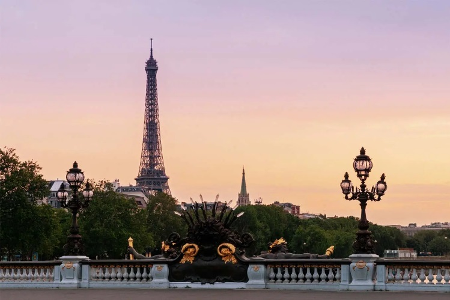
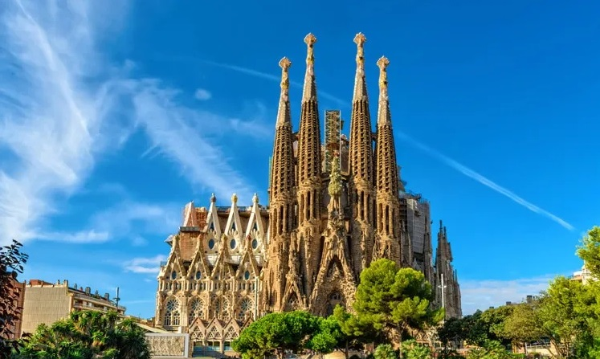
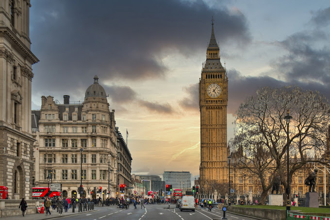
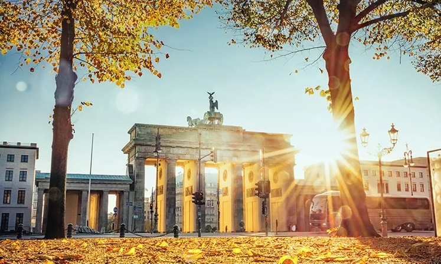
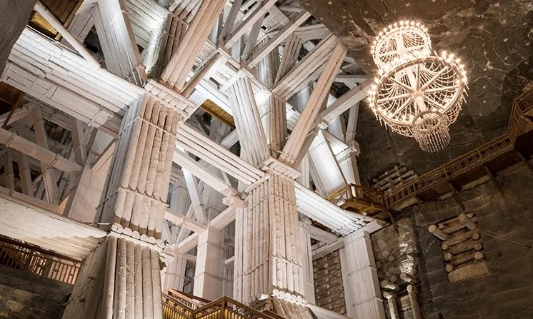

Bem-vindo a EuroTour
Sobre nós
Lugares Turísticos é um site que ajuda você a planejar sua viagem para a Europa, desde a compra das passagens, hospedagem e até a visita aos pontos turísticos mais importantes de cada região!
Principais pontos turísticos da Europa:
O Coliseu de Roma ou Anfiteatro Flaviano é um dos principais pontos turísticos da Itália e um dos monumentos mais famosos do mundo. Com uma construção que se iniciou no ano de 72 d.C e serviu como palco para gladiadores que lutavam entre si, ele atrai pelo menos 4 milhões de turistas todos os anos. O Coliseu de Roma tinha capacidade para 70 mil pessoas e oferecia espetáculos para distrair a população. Devido à quantidade de turistas que costumam visitar o local, recomendamos que garanta o seu ingresso para o Coliseu com antecedência e evite filas.
A Torre Eiffel é um ponto turístico obrigatório em Paris, França. A sua construção foi em 1889 para celebrar os 100 anos da Revolução Francesa, e tem 325 metros de altura e 1.665 degraus. Além de uma vista incrível que pode ser apreciada de diferentes maneiras, há vários restaurantes em torno da Torre Eiffel para aproveitar a culinária do país. Devido à espera de pelo menos duas horas para conhecer a Torre, recomendamos comprar a entrada com antecedência.
A Sagrada Família de Barcelona, Espanha, foi construída pelo famoso arquiteto Antoni Gaudì. Ela é uma igreja com enorme quantidade de detalhes que ainda não foi finalizada. A igreja está em construção há 135 anos e deve ficar pronta em 2026. Entretanto, é possível visitá-la e conhecer o seu interior.
O Big Ben é um dos pontos turísticos da Europa mais famosos da Inglaterra, em Londres, pois todos fazem referência ao famoso relógio localizado na Torre Elizabeth, com aproximadamente 13 toneladas. Ele fica instalado no Parlamento Inglês, onde é possível fazer uma visita às divisões do Parlamento gratuitamente. Além disso, também é possível fazer um passeio guiado pelo interior do Big Ben para conhecer a sua história e a importância dele para o país.
O portão, que é um dos pontos turísticos na Europa mais famosos, conta ainda com alto relevos neoclássicos, esculturas de Johann Gottfried Schadow e um carro de duas rodas puxado por cavalos e com Irene, deusa grega da paz. Visitar esse que é o maior cartão postal de Berlim é ficar de frente com mais de 200 anos de história e, ao mesmo tempo, estar diante de um verdadeiro símbolo de uma Alemanha reunificada. Atualmente, o cartão postal de Berlim visa promover a paz e a reflexão com a Sala do Silêncio, administrada pela ONU.
Patrimônio Mundial da Unesco e uma das empresas em operação mais antigas do mundo, a Mina de Sal de Wieliczka, cidade nos arredores de Cracóvia, é também uma das atrações mais procuradas da Polônia.Ainda hoje o sal é extraído do local, aberto no século XIII. É possível visitar dois dos 350 km de passagens e câmaras subterrâneas que vão a até 135 metros por baixo da terra e contêm lagos e capelas com esculturas e luminárias feitos com sal. Nas câmaras maiores são realizados concertos, peças de teatro e outros eventos.

A Torre de Belém é um dos pontos turísticos da Europa mais visitados e um dos principais de Portugal. Ela foi construída entre 1514 e 1520, época das navegações, e tinha como objetivo proteger a cidade de invasores. Em 1983, a Torre de Belém recebeu o título de Patrimônio da Humanidade pela UNESCO.